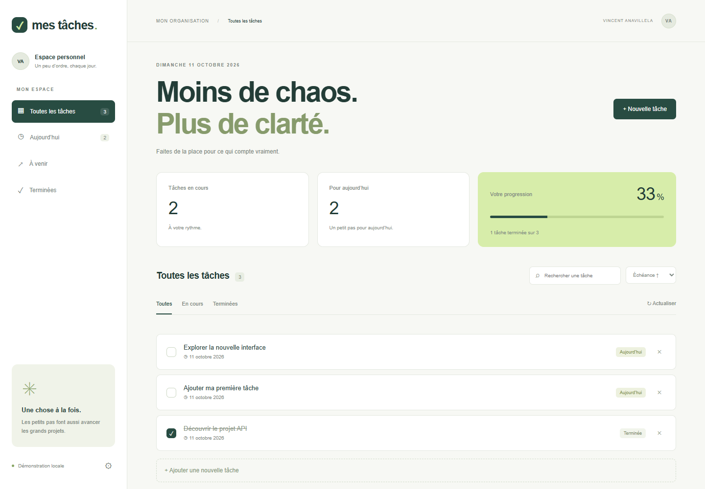
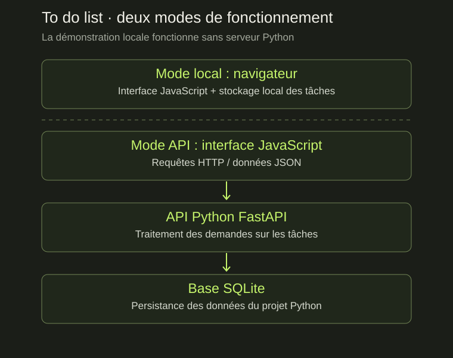

Organiser les tâches et relier une interface à une API.

Le contexte
To do list est une application de gestion personnelle : ajout, suppression, validation et réouverture des tâches, avec dates limites.
Le périmètre
La refonte apporte une interface responsive, la recherche, les filtres, le tri et le suivi de progression. La démonstration fonctionne dans le navigateur ; le projet Python téléchargeable utilise une API FastAPI et une base SQLite.
RÉALISATION / STAGE À LA CIREST · MAI–JUIN 2026
Relier une interface à une API
Ma contribution
Créer une interface JavaScript capable de demander la liste des tâches, d’en ajouter et d’en supprimer en appelant une API développée avec FastAPI.
La démonstration actuelle permet aussi de filtrer, rechercher et suivre l’avancement des tâches dans le navigateur.
Ce que j’ai appris
Comprendre les méthodes HTTP, les échanges JSON et les appels asynchrones avec fetch. Distinguer une réponse du serveur d’une modification de l’affichage.
La connexion entre le navigateur et l’API m’a amené à vérifier l’URL, le port, la disponibilité du serveur et les erreurs retournées.

Deux modes distincts : démonstration locale ou connexion à l’API Python. L’archive contient les instructions de démarrage.
Compétences et éléments observables
Compétence travaillée
Réalisation
Élément à consulter
Concevoir et développer une solution applicative
Interface JavaScript et API FastAPI
Code dans l’archive
Gérer les données
Échanges JSON et persistance des tâches
API Python et base SQLite
Mettre à disposition un service informatique
Préparer le démarrage de l’application
Instructions de l’archive et démonstration
Un parcours à vérifier
Ajouter une tâche avec une échéance, la retrouver dans la liste, la marquer comme terminée, puis la supprimer. Recharger ensuite la page pour observer la persistance. En mode API, le serveur Python doit être démarré et accessible.